![Two-panel figure. Panel (a), PGD for image classification: a clean photograph of a dog, labelled Dog, gets a random start added to it, and the resulting current image is passed through a frozen model to a loss. A gradient step then ascends that loss surface and the result is projected back into an L2 ball of radius epsilon around the clean image, a loop repeated for T steps, ending in an adversarial image that still looks like the dog but is labelled Cat. A large arrow, headed adapt PGD to feed-forward 3DGS, carries three points down to panel (b): perturb reference views, freeze the reconstruction model, maximise rendering error. Panel (b), effect on novel-view synthesis: two scenes, a white bathroom and a red dining room, each shown as a clean row and an attacked row with two reference views and two novel views. Both clean rows render sharply; in the attacked rows the bathroom comes back almost entirely black and the dining room collapses into a dark smear. A radar map on the right plots clean against attacked over PSNR, LPIPS, DINO, CLIP and SSIM, the attacked polygon sitting well inside the clean one on every axis.](./static/images/motivation/pgd_to_feedforward_3dgs.jpg)
(a) PGD is the standard way to attack an image classifier: from a randomly perturbed start, it repeatedly takes a gradient step that raises the model’s loss and projects the result back into an ε-ball around the clean image, so that after T steps the picture still reads as a dog to us while the model calls it a cat.
(b) The same loop carries over to feed-forward 3DGS almost unchanged, perturb the reference views instead of a single image, keep the reconstruction model frozen, and maximise rendering error instead of a class score. What comes back is far worse than a flipped label. The perturbed reference views still look like ordinary photographs of the room, yet every novel view rendered from them falls apart: the bathroom returns almost entirely black, and the dining room collapses into a dark smear. The radar map puts the two side by side over PSNR, SSIM, LPIPS, CLIP and DINO, and the attacked scores sit well inside the clean ones on every axis.
This probe is white-box, the gradient step needs the model’s own gradients, which a real attacker would rarely have. That it works at all is what motivates AdvSplat: if feed-forward 3DGS is this fragile when the gradients are handed to you, the question worth asking is how much of the damage survives when they are not, which is the black-box setting the rest of this work operates in.
![Pipeline of AdvSplat. On the left, two reference views are partitioned into patches and passed through a DCT into blue coefficient maps, which a low-frequency filter combines with sampled yellow noise; an inverse DCT turns the sum into green perturbed images, which are rendered by a black box marked with a question mark, the feed-forward 3DGS model whose parameters are unknown. The right half splits into two rows. The gradient-based row above and the gradient-free row below each run from iteration t equals 1 to t equals T over a contour map of the loss drawn as grey ellipses with a red star at the maximum: the upper row follows a red gradient arrow towards that star, the lower row samples inside a red dashed ellipse instead. Both end at an optimal noise block marked with a red check.](./static/images/pipeline/pipeline.jpg)
Pipeline of our proposed method, including gradient-based and gradient-free variants. The blue blocks denote the DCT coefficient maps, the yellow blocks denote the sampled noise, the green blocks denote the images after iDCT, and the purple blocks denote the rendered images. The black box in the center is the feed-forward 3DGS model with unknown parameters, illustrated by the gray block. The gray ellipses depict a contour map of the loss function, and the red star indicates the maximum. The red arrow inside the ellipse shows the gradient direction, while the red dashed ellipse indicates the noise sampling region. Finally, the noise sample marked with a red checkmark is the optimal perturbation we seek.
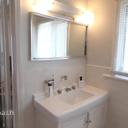
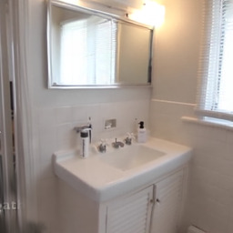
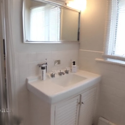
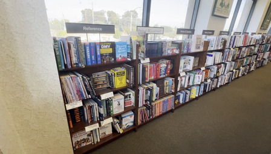
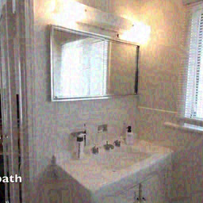
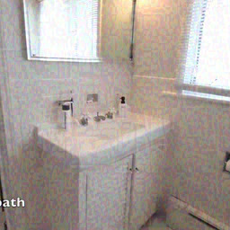
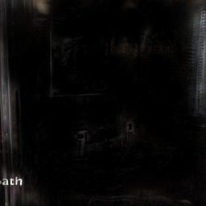
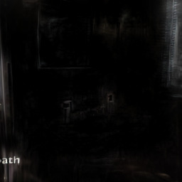
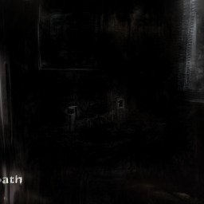
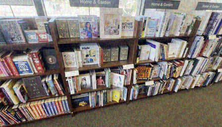
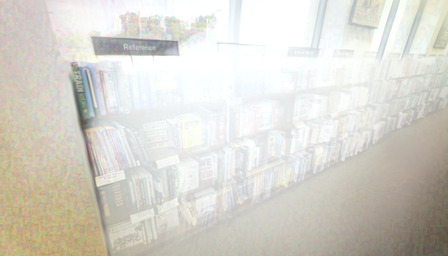
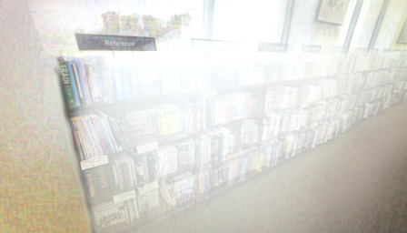
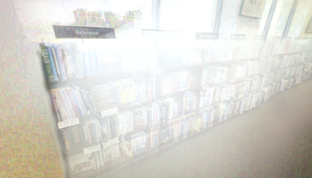
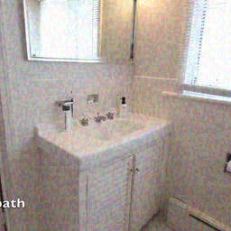
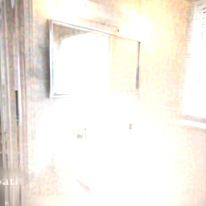
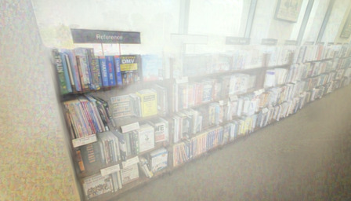
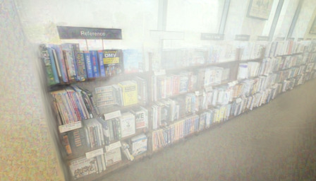
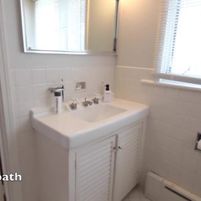
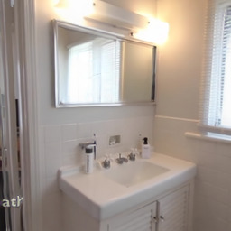
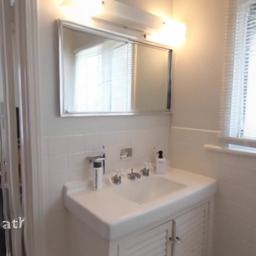
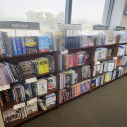
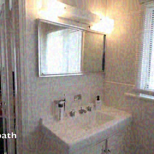
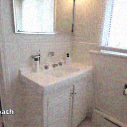
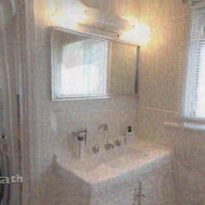
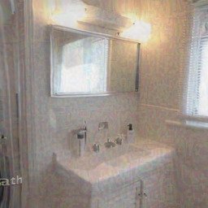
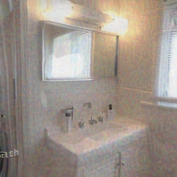
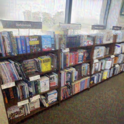
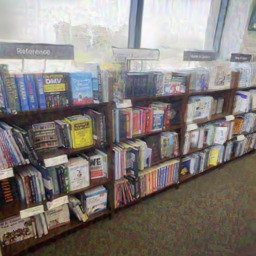
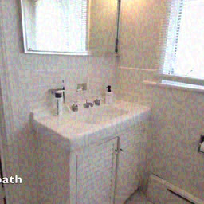
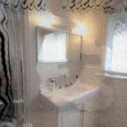
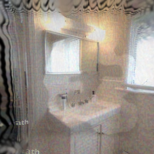
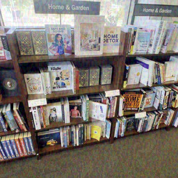
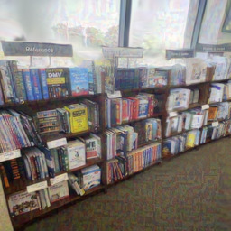
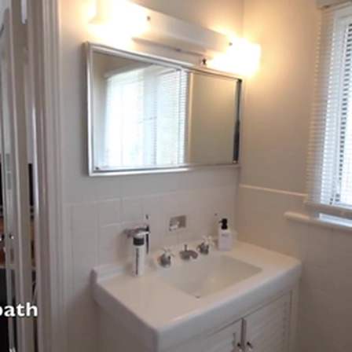
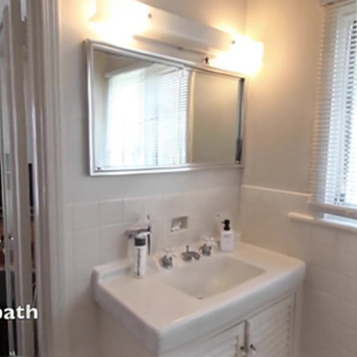
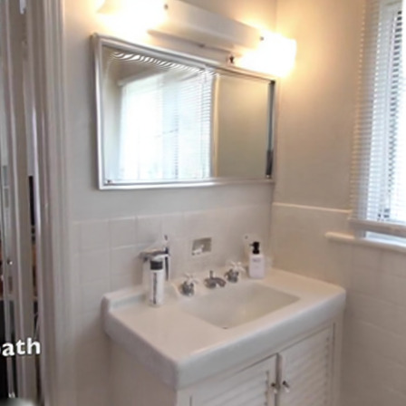
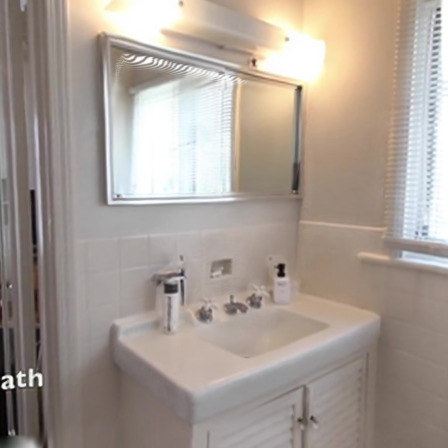
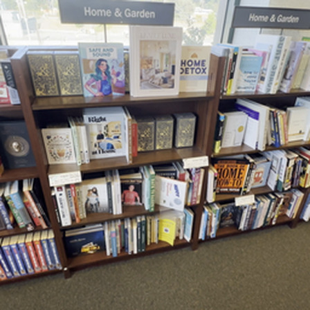
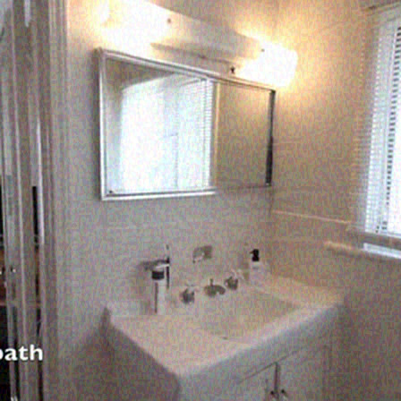
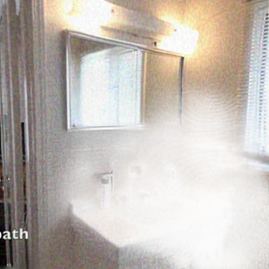
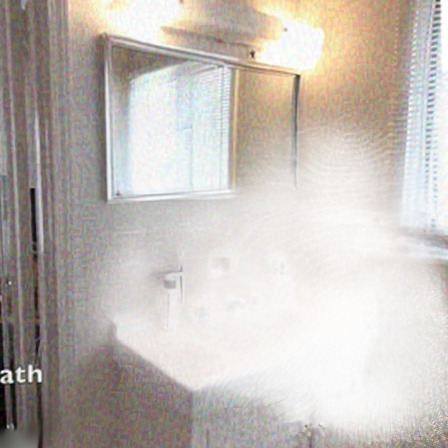
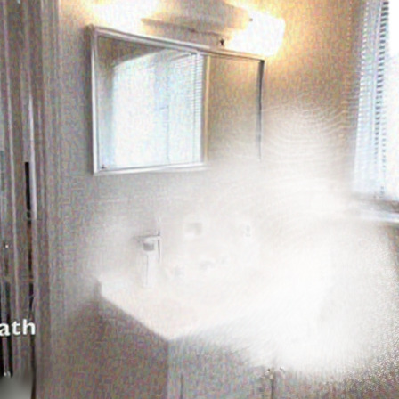
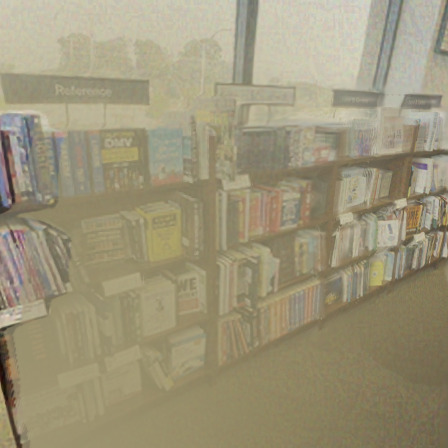
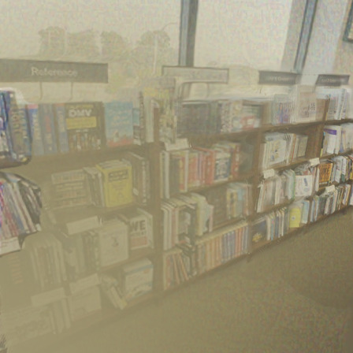
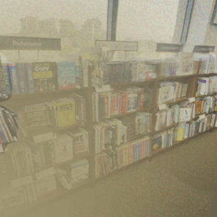
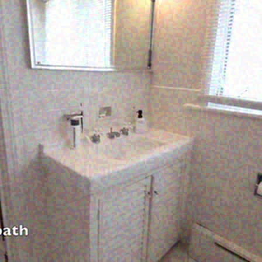
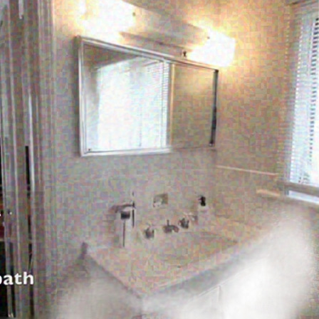
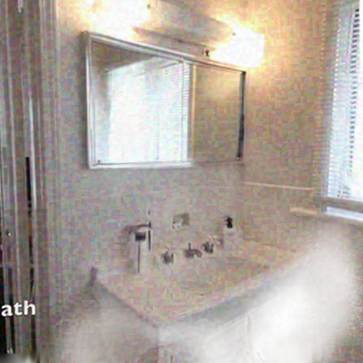
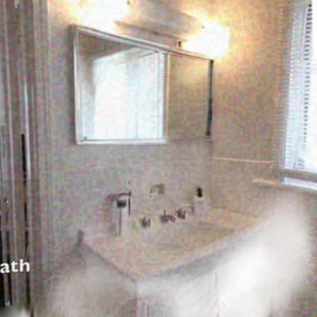
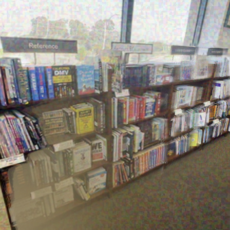
Qualitative results on RE10K and DL3DV (ε = 8/255). DP denotes DepthSplat, NP denotes NoPoSplat, and AP denotes AnySplat. GB denotes the gradient-based variant, and GF denotes the gradient-free variant. All baselines use clean inputs, whereas our method uses the optimized adversarial examples as inputs.
Qualitative comparison against 3D style transfer baselines. Each column is one style image (top row) and each row is one content image (left of the row), repeated for the three methods. MorphAny3D and StyleSculptor drift away from the content geometry once the style is out of distribution, while DiLAST keeps the object intact and still takes on the style. Every result is a rendered orbit of the generated 3D asset.


A natural alternative is to run 2D style transfer on the content image first and then lift the stylized image to 3D. That route runs into a trade-off with no good setting. When content preservation is too strong, the style cannot be effectively transferred. Conversely, when content preservation is too weak, the stylized image deviates further from the training distribution of the 3D generative model, leading to poor generation quality. In practice, it is often difficult for 2D style transfer to find a suitable level of content preservation that remains “recognizable” to the 3D model. In contrast, DiLAST directly guides the 3D latents, indirectly injecting an appropriate degree of style into the latent space while achieving suitable content preservation, without being affected by the 2D stylized image.


If you find our work helpful, please consider citing us:
@article{qiao2026advsplat,
title={{AdvSplat}: Adversarial Attacks on Feed-Forward Gaussian Splatting Models},
author={Qiao, Yiran and Lu, Yiren and Zhou, Yunlai and Yang, Rui and Hou, Linlin and Yin, Yu and Ma, Jing},
journal={arXiv preprint arXiv:2603.23686},
year={2026}
}